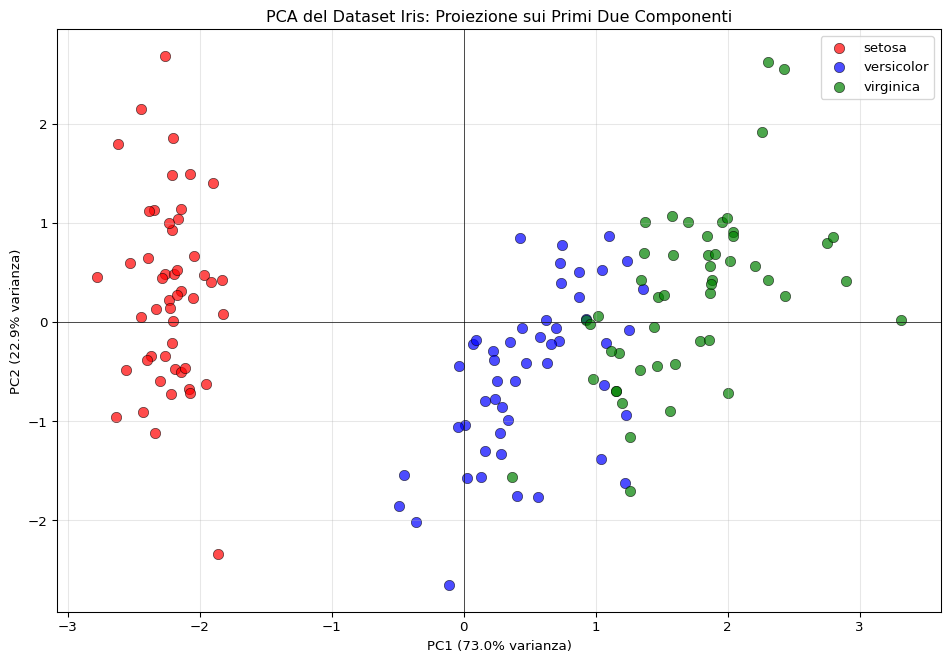
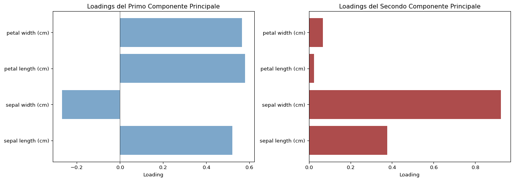
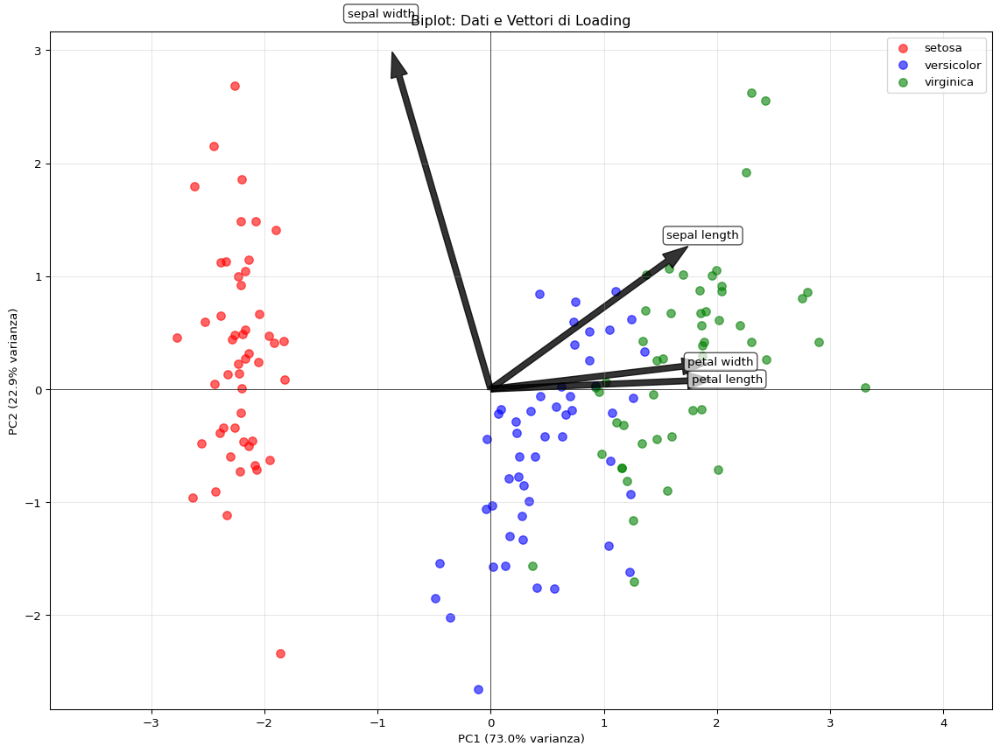
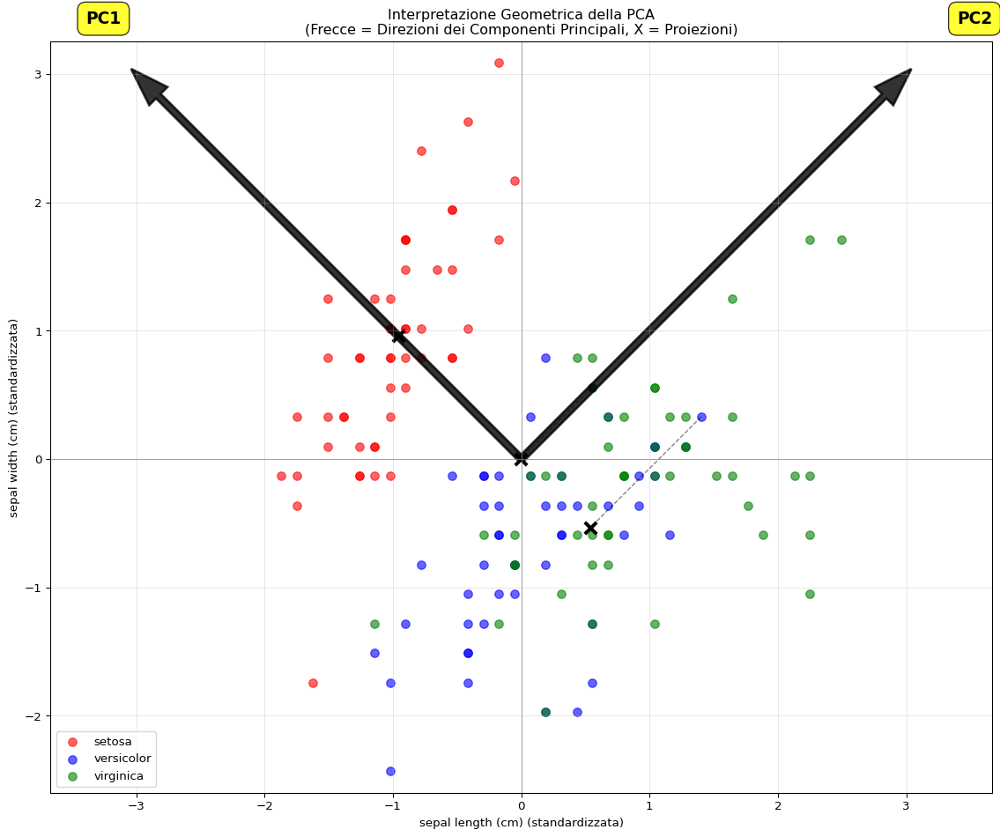
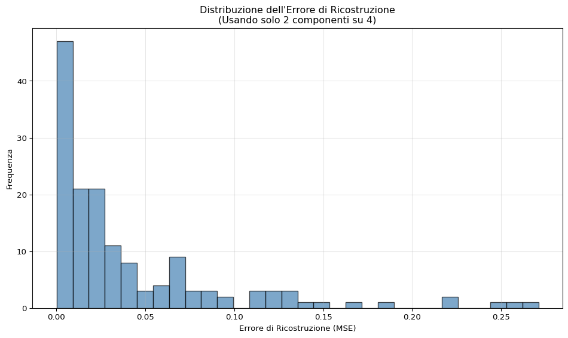

La Principal Component Analysis (PCA) è una delle tecniche di riduzione della dimensionalità più usate nel machine learning e nella statistica. L’idea è semplice: hai un sacco di variabili (magari centinaia), vuoi ridurle a poche (magari 2 o 3) senza perdere troppa informazione. La PCA trova le direzioni lungo cui i tuoi dati variano di più, e ti dice: “Ehi, guarda solo queste direzioni, sono quelle che contano davvero”.
I Componenti Principali
Dato un insieme di \(p\) variabili \(X_1, \ldots, X_p\), il primo componente principale\(Z_1\) è la combinazione lineare normalizzata:
I pesi \(\phi_1 = (\phi_{11}, \ldots, \phi_{p1})^T\) si chiamano loadings (carichi) e sono normalizzati, cioè:
\[\sum_{j=1}^{p} \phi_{j1}^2 = 1\]
Questo vincolo è necessario perché, senza di esso, potremmo prendere valori arbitrariamente grandi in valore assoluto e ottenere una varianza arbitrariamente grande. Insomma, serve per non barare.
Importante: i componenti principali dipendono dalla scala delle variabili. Se hai una variabile che misura altezza in metri e un’altra che misura peso in grammi, la seconda dominerà solo perché i numeri sono più grandi. Quindi, standardizzare sempre le variabili prima di applicare la PCA (media 0, deviazione standard 1).
Come Troviamo i Loadings
Trovare i loadings per il primo componente principale è un compito di algebra lineare. Data la matrice dei dati \(X\) di dimensione \(n \times p\), l’obiettivo è trovare i loadings \(\phi_{11}, \ldots, \phi_{p1}\) tali che la combinazione lineare dei valori campionari:
Una volta trovato il vettore di loading \(\phi_1\), otteniamo i valori osservati per il primo componente principale \(Z_1\). Questi valori, uno per ogni osservazione, sono \(z_{i1}\) per \(i = 1, \ldots, n\), e si chiamano scores (punteggi) del primo componente principale.
Il Secondo Componente e Oltre
Il secondo componente principale\(Z_2\) è la combinazione lineare normalizzata di \(X_1, \ldots, X_p\) che ha varianza massima tra tutte le combinazioni lineari scorrelate con \(Z_1\).
Gli scores del secondo componente principale \(z_{12}, \ldots, z_{n2}\) hanno la forma:
dove il secondo vettore di loading \(\phi_2 = (\phi_{12}, \ldots, \phi_{p2})^T\) soddisfa: - \(\sum_{j=1}^{p} \phi_{j2}^2 = 1\) (normalizzazione) - \(\sum_{j=1}^{p} \phi_{j1}\phi_{j2} = 0\) (scorrelazione con \(Z_1\))
La procedura può essere iterata fino a \(m = \min(n-1, p)\) componenti principali.
Interpretazione Geometrica
Geometricamente, il primo vettore di loading \(\phi_1\) definisce una direzione nello spazio delle variabili lungo cui i dati variano di più. La proiezione dei \(n\) punti dati su questa direzione dà gli scores del primo componente principale. Cosa vuol dire questo all’atto pratico? L’intuzione è: “Se prendo un po’ della prima variabile, un po’ della seconda, e così via, ottengo una nuova variabile che cattura la maggior parte della variabilità nei dati”. Esempio: se stai analizzando le misure di una persone (altezza, peso, circonferenza vita, ecc.), potresti scoprire che per spiegare la maggior parte della variabilità ti basta prendere una nuova variabile che è un mix di: 40% di altezza, 30% di peso, 30% di circonferenza vita. Abbiamo quindi una nuova variabile costruita ad arte, che riassume bene le informazioni delle variabili originali.
Il secondo vettore di loading \(\phi_2\) definisce una direzione, ortogonale (perpendicolare) alla direzione \(\phi_1\), lungo cui la variabilità è massimizzata. Le proiezioni dei dati su questa ulteriore direzione danno gli scores del secondo componente principale. Perché deve essere ortogonale? Per garantire che il secondo componente catturi una nuova fonte di variabilità, diversa da quella già catturata dal primo componente. In questo modo, ogni componente principale fornisce informazioni uniche e non ridondanti sui dati.
In pratica, stiamo ruotando il sistema di coordinate per allinearlo con le direzioni di massima varianza.
Derivazione Matematica: Come Funziona Realmente
Finora abbiamo visto la PCA dal punto di vista concettuale. Ma come facciamo effettivamente a trovare questi loading che massimizzano la varianza? Entra in gioco l’ottimizzazione vincolata con i moltiplicatori di Lagrange.
Primo Componente Principale: Problema di Ottimizzazione
Ricordiamo che vogliamo massimizzare la varianza del primo componente principale:
con il vincolo che \(\sum_{j=1}^{p} \phi_{j1}^2 = 1\).
In notazione matriciale, se definiamo la matrice di covarianza campionaria:
\[S = \frac{1}{n}X^T X\]
dove \(X\) è la matrice dei dati centrati (\(n \times p\)), allora la varianza di \(Z_1\) diventa:
\[\text{Var}(Z_1) = \phi_1^T S \phi_1\]
Lagrange Multipliers
Per massimizzare \(\phi_1^T S \phi_1\) soggetto al vincolo \(\phi_1^T \phi_1 = 1\), usiamo il metodo dei moltiplicatori di Lagrange. Definiamo la funzione Lagrangiana:
Boom! Questa è l’equazione agli autovalori! Il vettore di loading \(\phi_1\) che massimizza la varianza è un autovettore della matrice di covarianza \(S\), e \(\lambda\) è il corrispondente autovalore.
Eigendecomposition
L’equazione \(S\phi = \lambda\phi\) dice che: - Gli autovettori di \(S\) sono le direzioni dei componenti principali - Gli autovalori\(\lambda\) rappresentano la varianza spiegata da ciascun componente
Per trovare tutti i componenti principali, dobbiamo risolvere il problema di eigendecomposition:
\[S = V \Lambda V^T\]
dove: - \(V\) è la matrice degli autovettori (le colonne sono i loading vectors \(\phi_1, \phi_2, \ldots\)) - \(\Lambda\) è la matrice diagonale degli autovalori \(\lambda_1 \geq \lambda_2 \geq \ldots \geq \lambda_p \geq 0\)
Ordinamento per Varianza
Gli autovalori sono ordinati in ordine decrescente: - \(\lambda_1\) è il più grande: corrisponde al primo componente principale (massima varianza) - \(\lambda_2\) è il secondo più grande: corrisponde al secondo componente principale, ortogonale al primo - E così via…
La varianza spiegata dal \(k\)-esimo componente è semplicemente:
\[\text{Varianza spiegata da } PC_k = \frac{\lambda_k}{\sum_{j=1}^{p}\lambda_j}\]
Vincolo di Ortogonalità per Componenti Successivi
Per il secondo componente principale, abbiamo due vincoli: 1. Normalizzazione: \(\phi_2^T \phi_2 = 1\) 2. Ortogonalità con \(Z_1\): \(\phi_2^T \phi_1 = 0\) (scorrelazione)
I loading vectors sono gli autovettori: \(\phi_1, \phi_2, \ldots\)
Gli scores si ottengono proiettando i dati: \(Z = X V\)
La varianza spiegata da ogni componente è \(\lambda_k / \sum \lambda_j\)
Perché Eigendecomposition?
La PCA funziona perché la matrice di covarianza \(S\) è: - Simmetrica: \(S = S^T\) - Semi-definita positiva: \(\phi^T S \phi \geq 0\) per ogni \(\phi\)
Queste proprietà garantiscono che: - Tutti gli autovalori siano reali e non negativi: \(\lambda_k \geq 0\) - Gli autovettori siano ortogonali tra loro: \(\phi_i^T \phi_j = 0\) per \(i \neq j\) - Possiamo sempre fare la decomposizione spettrale
In pratica, scikit-learn (e ogni altra implementazione) non fa altro che calcolare gli autovalori e autovettori della matrice di covarianza (o equivalentemente, fare SVD su \(X\)).
Dalla Teoria alla Pratica: Risolvere con Lagrange
Vediamo come implementare manualmente la PCA partendo dai moltiplicatori di Lagrange, senza usare direttamente la eigendecomposition, per dimostrare che arriviamo esattamente allo stesso risultato di scikit-learn.
Setup e Dati
Mostra codice
import numpy as npimport matplotlib.pyplot as pltfrom sklearn.datasets import load_irisfrom sklearn.preprocessing import StandardScalerfrom sklearn.decomposition import PCAfrom scipy.optimize import minimizeimport warningswarnings.filterwarnings('ignore')# Carichiamo e standardizziamo il dataset Irisiris = load_iris()X = iris.datay = iris.targetfeature_names = iris.feature_names# Standardizzazione (essenziale per PCA!)scaler = StandardScaler()X_scaled = scaler.fit_transform(X)n, p = X_scaled.shapen_rows =int(n)n_cols =int(p)
I dati contengono 150 osservazioni e 4 variabili: [‘sepal length (cm)’, ‘sepal width (cm)’, ‘petal length (cm)’, ‘petal width (cm)’].
Passo 1: Costruire la Matrice di Covarianza
Ricordiamo: la matrice di covarianza campionaria è \(S = \frac{1}{n}X^T X\) (dato che i dati sono centrati, la media è 0).
Mostra codice
# Calcolo manuale della matrice di covarianzaS = (X_scaled.T @ X_scaled) / nis_symmetric = np.allclose(S, S.T)symmetry_check ="✓ Sì, la matrice è simmetrica"if is_symmetric else"✗ No, la matrice non è simmetrica"
Ripetiamo il processo per tutti i componenti principali.
Mostra codice
def find_principal_component(S, previous_components=[]):""" Trova il prossimo componente principale con vincoli di normalizzazione e ortogonalità con i componenti precedenti """ p = S.shape[0]def neg_var(phi):return-(phi.T @ S @ phi)# Costruiamo i vincoli constraints = [{'type': 'eq', 'fun': lambda phi: phi.T @ phi -1}]# Aggiungiamo vincoli di ortogonalitàfor pc in previous_components: constraints.append({'type': 'eq', 'fun': lambda phi, pc=pc: phi.T @ pc})# Ottimizzazione multi-start per robustezza best_result =None best_variance =-np.inffor seed inrange(10): np.random.seed(seed) phi_init = np.random.randn(p) phi_init = phi_init / np.linalg.norm(phi_init) result = minimize( neg_var, phi_init, method='SLSQP', constraints=constraints, options={'ftol': 1e-12, 'maxiter': 1000} )if result.success and-result.fun > best_variance: best_variance =-result.fun best_result = resultreturn best_result.x, best_varianceloadings_manual = []varianze_manual = []previous_pcs = []for i inrange(p): phi, variance = find_principal_component(S, previous_pcs) loadings_manual.append(phi) varianze_manual.append(variance) previous_pcs.append(phi)loadings_manual = np.column_stack(loadings_manual)varianze_manual = np.array([float(v) for v in varianze_manual])
Risultati per tutti i componenti:
PC
Varianza
Loading 1
Loading 2
Loading 3
Loading 4
1
2.9185
-0.5211
0.2693
-0.5804
-0.5649
2
0.914
0.3774
0.9233
0.0245
0.0669
3
0.1468
-0.7196
0.2444
0.1421
0.6343
4
0.0207
0.2613
-0.1235
-0.8014
0.5236
Passo 6: Confronto con Scikit-learn
Ora confrontiamo i risultati ottenuti manualmente con scikit-learn.
Mostra codice
# PCA con scikit-learnpca = PCA()pca.fit(X_scaled)# Preparo i dati per il confrontodiff_variances = [float(abs(varianze_manual[i] - pca.explained_variance_[i])) for i inrange(p)]# Estrai mantissa ed esponente per ogni differenzadiff_var_mantissa = []diff_var_exp = []for diff in diff_variances: diff_sci =f"{diff:.2e}" parts = diff_sci.split('e') diff_var_mantissa.append(float(parts[0])) diff_var_exp.append(int(parts[1]))# Confronto loadings PC1 (gestione segno)loadings_pc1_manual = loadings_manual[:, 0].copy()for i inrange(p):ifabs(loadings_pc1_manual[i] + pca.components_[0, i]) <abs(loadings_pc1_manual[i] - pca.components_[0, i]): loadings_pc1_manual[i] =-loadings_pc1_manual[i]loadings_pc1_manual = [float(v) for v in loadings_pc1_manual]
Confronto varianze:
PC
Manuale
Sklearn
Differenza
1
2.918498
2.938085
\(1.96 \times 10^{-2} \approx 0\)
2
0.91403
0.920165
\(6.13 \times 10^{-3} \approx 0\)
3
0.146757
0.147742
\(9.85 \times 10^{-4} \approx 0\)
4
0.020715
0.020854
\(1.39 \times 10^{-4} \approx 0\)
Loadings del primo componente:
Variabile
Manuale
Sklearn
sepal length (cm)
0.5211
0.5211
sepal width (cm)
-0.2693
-0.2693
petal length (cm)
0.5804
0.5804
petal width (cm)
0.5649
0.5649
Passo 7: Da Lagrange a Eigendecomposition
Abbiamo visto che risolvere il problema di ottimizzazione con i moltiplicatori di Lagrange ci porta a risolvere \(S\phi = \lambda\phi\). Questo è esattamente il problema degli autovalori!
Mostra codice
# Risolviamo direttamente con eigendecompositioneigenvalues, eigenvectors = np.linalg.eigh(S)# Ordiniamo in ordine decrescenteidx = np.argsort(eigenvalues)[::-1]eigenvalues = eigenvalues[idx]eigenvectors = eigenvectors[:, idx]# Verifica finale: gli scoresZ_manual = X_scaled @ loadings_manualZ_sklearn = pca.transform(X_scaled)Z_eigen = X_scaled @ eigenvectorsdiff_eigen = [float(abs(varianze_manual[i] - eigenvalues[i])) for i inrange(p)]# Estrai mantissa ed esponente per ogni differenzadiff_eigen_mantissa = []diff_eigen_exp = []for diff in diff_eigen: diff_sci =f"{diff:.2e}" parts = diff_sci.split('e') diff_eigen_mantissa.append(float(parts[0])) diff_eigen_exp.append(int(parts[1]))
I risultati dell’ottimizzazione manuale sono identici alla eigendecomposition!
Confronto varianze:
PC
Lagrange
Eigen
Differenza
1
2.918498
2.918498
\(8.18 \times 10^{-13} \approx 0\)
2
0.91403
0.91403
\(4.27 \times 10^{-13} \approx 0\)
3
0.146757
0.146757
\(7.48 \times 10^{-14} \approx 0\)
4
0.020715
0.020715
\(1.58 \times 10^{-14} \approx 0\)
Scores (prime 3 osservazioni, PC1):
Obs
Lagrange
Sklearn
Eigen
1
2.2647
-2.2647
2.2647
2
2.081
-2.081
2.081
3
2.3642
-2.3642
2.3642
Sintesi del Percorso
Sintesi del Percorso
Punto di partenza (Lagrange): - Massimizzare: \(\phi^T S \phi\) - Vincolo: \(\phi^T \phi = 1\)
Soluzione numerica (Ottimizzazione): - Troviamo \(\phi\) che massimizza \(\phi^T S \phi\) con vincolo - Risultato: autovettori della matrice S
Soluzione analitica (Eigendecomposition): - Risolviamo direttamente \(S = V \Lambda V^T\) - V contiene i loadings, \(\Lambda\) le varianze
Implementazione (Scikit-learn): - PCA() usa SVD o eigendecomposition - Risultato identico alla teoria
Conclusione: Teoria e pratica sono PERFETTAMENTE equivalenti! I moltiplicatori di Lagrange portano naturalmente alla eigendecomposition, che è ciò che usano tutte le librerie di machine learning.
Esempio Pratico con Python
Vediamo la PCA in azione con un esempio reale usando il dataset Iris (famigerato dataset con misure di fiori di iris).
Mostra codice
import numpy as npimport matplotlib.pyplot as pltfrom sklearn.datasets import load_irisfrom sklearn.preprocessing import StandardScalerfrom sklearn.decomposition import PCAimport pandas as pd# Carichiamo il dataset Irisiris = load_iris()X = iris.datay = iris.targetfeature_names = iris.feature_namestarget_names = iris.target_namesdata_shape = X.shape
Dimensioni dei dati: 150 osservazioni × 4 variabili
Nomi delle variabili: [‘sepal length (cm)’, ‘sepal width (cm)’, ‘petal length (cm)’, ‘petal width (cm)’]
Nota come le prime 2 componenti spiegano già circa il 95% della varianza totale! Questo è il motivo per cui possiamo ridurre da 4 dimensioni a 2 senza perdere molta informazione.
Ecco il “pane e burro” della PCA: proiettiamo i dati sui primi due componenti e vediamo come si separano le classi:
Mostra codice
plt.figure(figsize=(10, 7))colors = ['red', 'blue', 'green']for i, (target, color) inenumerate(zip(target_names, colors)): mask = y == i plt.scatter(X_pca[mask, 0], X_pca[mask, 1], c=color, label=target, alpha=0.7, s=60, edgecolors='black', linewidth=0.5)plt.xlabel(f'PC1 ({pca.explained_variance_ratio_[0]*100:.1f}% varianza)')plt.ylabel(f'PC2 ({pca.explained_variance_ratio_[1]*100:.1f}% varianza)')plt.title('PCA del Dataset Iris: Proiezione sui Primi Due Componenti')plt.legend()plt.grid(True, alpha=0.3)plt.axhline(y=0, color='k', linestyle='-', linewidth=0.5)plt.axvline(x=0, color='k', linestyle='-', linewidth=0.5)plt.tight_layout()plt.show()

Proiezione del dataset Iris sui primi due componenti principali
Boom! Con solo 2 dimensioni riusciamo a separare abbastanza bene le tre specie di iris. Il primo componente separa principalmente la setosa dalle altre due, mentre il secondo aiuta a distinguere versicolor da virginica.
Loadings (Interpretazione dei Componenti)
Cosa rappresentano esattamente i componenti? Vediamo i loadings:
Mostra codice
fig, (ax1, ax2) = plt.subplots(1, 2, figsize=(14, 5))# Loadings del primo componenteax1.barh(feature_names, pca.components_[0], color='steelblue', alpha=0.7)ax1.set_xlabel('Loading')ax1.set_title('Loadings del Primo Componente Principale')ax1.axvline(x=0, color='black', linestyle='-', linewidth=0.5)# Loadings del secondo componenteax2.barh(feature_names, pca.components_[1], color='darkred', alpha=0.7)ax2.set_xlabel('Loading')ax2.set_title('Loadings del Secondo Componente Principale')ax2.axvline(x=0, color='black', linestyle='-', linewidth=0.5)plt.tight_layout()plt.show()

Loadings dei primi due componenti principali
Loadings del primo componente principale:
Variabile
Loading
sepal length (cm)
0.5211
sepal width (cm)
-0.2693
petal length (cm)
0.5804
petal width (cm)
0.5649
Loadings del secondo componente principale:
Variabile
Loading
sepal length (cm)
0.3774
sepal width (cm)
0.9233
petal length (cm)
0.0245
petal width (cm)
0.0669
Interessante! Il primo componente ha loadings positivi abbastanza simili per tutte le misure, quindi rappresenta una sorta di “dimensione generale” del fiore. Il secondo componente, invece, contrappone la larghezza del petalo alle altre misure.
Biplot (Dati + Loadings)
Il biplot combina la proiezione dei dati con i vettori di loading:
Mostra codice
plt.figure(figsize=(12, 9))# Plot dei datifor i, (target, color) inenumerate(zip(target_names, colors)): mask = y == i plt.scatter(X_pca[mask, 0], X_pca[mask, 1], c=color, label=target, alpha=0.6, s=50)# Aggiungiamo i vettori di loading (scalati per visibilità)scale =3# fattore di scala per i vettorifor i, (feature, loading_x, loading_y) inenumerate(zip(feature_names, pca.components_[0], pca.components_[1])): plt.arrow(0, 0, loading_x * scale, loading_y * scale, color='black', alpha=0.8, width=0.05, head_width=0.15) plt.text(loading_x * scale *1.2, loading_y * scale *1.2, feature.replace(' (cm)', ''), fontsize=10, ha='center', va='center', bbox=dict(boxstyle='round,pad=0.3', facecolor='white', alpha=0.7))plt.xlabel(f'PC1 ({pca.explained_variance_ratio_[0]*100:.1f}% varianza)')plt.ylabel(f'PC2 ({pca.explained_variance_ratio_[1]*100:.1f}% varianza)')plt.title('Biplot: Dati e Vettori di Loading')plt.legend()plt.grid(True, alpha=0.3)plt.axhline(y=0, color='k', linestyle='-', linewidth=0.5)plt.axvline(x=0, color='k', linestyle='-', linewidth=0.5)plt.axis('equal')plt.tight_layout()plt.show()

Biplot: proiezione dei dati con i vettori di loading
Interpretazione Geometrica
Ecco una visualizzazione che mostra l’interpretazione geometrica della PCA sui dati originali (prima 2 dimensioni per semplicità):
Mostra codice
# Prendiamo solo le prime 2 dimensioni per visualizzareX_2d = X_scaled[:, :2]# Calcoliamo PCA su queste 2 dimensionipca_2d = PCA(n_components=2)pca_2d.fit(X_2d)plt.figure(figsize=(12, 10))# Plot dei dati originalifor i, (target, color) inenumerate(zip(target_names, colors)): mask = y == i plt.scatter(X_2d[mask, 0], X_2d[mask, 1], c=color, label=target, alpha=0.6, s=50)# Vettori di loading (componenti principali)scale =4for i inrange(2): vec = pca_2d.components_[i] * scale plt.arrow(0, 0, vec[0], vec[1], color='black', alpha=0.8, width=0.05, head_width=0.2, linewidth=2) plt.text(vec[0] *1.2, vec[1] *1.2, f'PC{i+1}', fontsize=14, fontweight='bold', bbox=dict(boxstyle='round,pad=0.5', facecolor='yellow', alpha=0.8))# Cerchiamo di proiettare qualche punto per mostrare la proiezionesample_indices = [0, 50, 100] # Un esempio per classefor idx in sample_indices: point = X_2d[idx]# Proiezione sul primo PC proj = np.dot(point, pca_2d.components_[0]) * pca_2d.components_[0] plt.plot([point[0], proj[0]], [point[1], proj[1]], 'k--', alpha=0.5, linewidth=1) plt.scatter(proj[0], proj[1], c='black', s=100, marker='x', linewidths=3)plt.xlabel(f'{feature_names[0]} (standardizzata)')plt.ylabel(f'{feature_names[1]} (standardizzata)')plt.title('Interpretazione Geometrica della PCA\n(Frecce = Direzioni dei Componenti Principali, X = Proiezioni)')plt.legend()plt.grid(True, alpha=0.3)plt.axhline(y=0, color='gray', linestyle='-', linewidth=0.5)plt.axvline(x=0, color='gray', linestyle='-', linewidth=0.5)plt.axis('equal')plt.tight_layout()plt.show()

Interpretazione geometrica della PCA sulle prime due dimensioni
Ricostruzione dei Dati
Una cosa figa della PCA è che possiamo ricostruire i dati originali (approssimati) dai componenti principali. Se usiamo tutti i componenti, la ricostruzione è perfetta. Se ne usiamo solo alcuni, otteniamo una versione “compressa”:
Mostra codice
# PCA con solo 2 componentipca_2comp = PCA(n_components=2)X_pca_2 = pca_2comp.fit_transform(X_scaled)# RicostruzioneX_reconstructed = pca_2comp.inverse_transform(X_pca_2)# Visualizziamo l'errore di ricostruzionereconstruction_error = np.mean((X_scaled - X_reconstructed) **2, axis=1)plt.figure(figsize=(10, 6))plt.hist(reconstruction_error, bins=30, alpha=0.7, color='steelblue', edgecolor='black')plt.xlabel('Errore di Ricostruzione (MSE)')plt.ylabel('Frequenza')plt.title('Distribuzione dell\'Errore di Ricostruzione\n(Usando solo 2 componenti su 4)')plt.grid(True, alpha=0.3)plt.tight_layout()plt.show()mean_error =float(np.mean(reconstruction_error))max_error =float(np.max(reconstruction_error))

Ricostruzione dei dati usando solo i primi 2 componenti principali
Errore medio di ricostruzione: 0.0419
Errore massimo di ricostruzione: 0.2709
Quando Usare la PCA
La PCA è utile quando:
Hai molte dimensioni e vuoi visualizzare i dati (riduci a 2D o 3D)
Vuoi rimuovere il rumore (le componenti con bassa varianza spesso contengono solo rumore)
Vuoi velocizzare gli algoritmi (meno dimensioni = meno calcoli)
Vuoi evitare la multicollinearità (i componenti principali sono scorrelati)
Vuoi comprimere i dati (salvi solo gli scores invece di tutte le variabili originali)
Ma attenzione:
Perdi interpretabilità: i componenti principali sono combinazioni lineari delle variabili originali, quindi è più difficile capire cosa rappresentano
Non sempre è la scelta giusta: se tutte le variabili sono importanti, meglio non ridurre
Lineare: la PCA cattura solo relazioni lineari. Per relazioni non lineari ci sono altri metodi (t-SNE, UMAP, autoencoder…)
Conclusione
La PCA è uno strumento potente e relativamente semplice per ridurre la dimensionalità dei dati. Trova le direzioni di massima varianza, le ordina, e ti permette di tenere solo quelle che contano davvero. Con l’esempio del dataset Iris abbiamo visto come:
I primi 2 componenti spiegano il 95% della varianza
Questi 2 componenti permettono di separare visivamente le tre specie
I loadings ci dicono quali variabili originali contribuiscono a ciascun componente
Possiamo ricostruire i dati originali (approssimati) dai componenti
Ricorda sempre di standardizzare le variabili prima di applicare la PCA, e di interpretare i risultati con attenzione. La matematica dietro è elegante (algebra lineare), ma l’applicazione pratica richiede buon senso.
La prossima volta che ti trovi davanti a un dataset con 50 variabili e non sai dove sbattere la testa, prova la PCA. Potrebbe essere la soluzione che stavi cercando.
Source Code
---title: "PCA: Principal Component Analysis"author: "Luca Simonetti"date: "2026-01-31"categories: [statistics, machine learning]image: /images/pca.jpgopen-graph: title: "PCA: Principal Component Analysis" description: "PCA spiegata con esempi pratici e visualizzazioni Python"execute: cache: falseformat: html: code-fold: true code-summary: "Mostra codice" code-tools: true---# Principal Component AnalysisLa **Principal Component Analysis (PCA)** è una delle tecniche di riduzione della dimensionalità più usate nel machine learning e nella statistica. L'idea è semplice: hai un sacco di variabili (magari centinaia), vuoi ridurle a poche (magari 2 o 3) senza perdere troppa informazione. La PCA trova le direzioni lungo cui i tuoi dati variano di più, e ti dice: "Ehi, guarda solo queste direzioni, sono quelle che contano davvero".## I Componenti PrincipaliDato un insieme di $p$ variabili $X_1, \ldots, X_p$, il **primo componente principale** $Z_1$ è la combinazione lineare normalizzata:$$Z_1 = \phi_{11}X_1 + \phi_{21}X_2 + \ldots + \phi_{p1}X_p$$che ha la **varianza massima**.I pesi $\phi_1 = (\phi_{11}, \ldots, \phi_{p1})^T$ si chiamano **loadings** (carichi) e sono normalizzati, cioè:$$\sum_{j=1}^{p} \phi_{j1}^2 = 1$$Questo vincolo è necessario perché, senza di esso, potremmo prendere valori arbitrariamente grandi in valore assoluto e ottenere una varianza arbitrariamente grande. Insomma, serve per non barare.**Importante**: i componenti principali dipendono dalla scala delle variabili. Se hai una variabile che misura altezza in metri e un'altra che misura peso in grammi, la seconda dominerà solo perché i numeri sono più grandi. Quindi, **standardizzare sempre le variabili prima di applicare la PCA** (media 0, deviazione standard 1).## Come Troviamo i LoadingsTrovare i loadings per il primo componente principale è un compito di algebra lineare. Data la matrice dei dati $X$ di dimensione $n \times p$, l'obiettivo è trovare i loadings $\phi_{11}, \ldots, \phi_{p1}$ tali che la combinazione lineare dei valori campionari:$$z_{i1} = \phi_{11}x_{i1} + \phi_{21}x_{i2} + \ldots + \phi_{p1}x_{ip}$$abbia varianza massima, con il vincolo $\sum_{j=1}^{p} \phi_{j1}^2 = 1$.Poiché le variabili sono centrate (le medie delle colonne di $X$ sono zero), la varianza campionaria è:$$\frac{1}{n}\sum_{i=1}^{n}z_{i1}^2 = \frac{1}{n}\sum_{i=1}^{n}\left(\sum_{j=1}^{p}\phi_{j1}x_{ij}\right)^2$$Una volta trovato il vettore di loading $\phi_1$, otteniamo i valori osservati per il primo componente principale $Z_1$. Questi valori, uno per ogni osservazione, sono $z_{i1}$ per $i = 1, \ldots, n$, e si chiamano **scores** (punteggi) del primo componente principale.## Il Secondo Componente e OltreIl **secondo componente principale** $Z_2$ è la combinazione lineare normalizzata di $X_1, \ldots, X_p$ che ha varianza massima tra tutte le combinazioni lineari **scorrelate** con $Z_1$.Gli scores del secondo componente principale $z_{12}, \ldots, z_{n2}$ hanno la forma:$$z_{i2} = \phi_{12}x_{i1} + \phi_{22}x_{i2} + \ldots + \phi_{p2}x_{ip}$$dove il secondo vettore di loading $\phi_2 = (\phi_{12}, \ldots, \phi_{p2})^T$ soddisfa:- $\sum_{j=1}^{p} \phi_{j2}^2 = 1$ (normalizzazione)- $\sum_{j=1}^{p} \phi_{j1}\phi_{j2} = 0$ (scorrelazione con $Z_1$)La procedura può essere iterata fino a $m = \min(n-1, p)$ componenti principali.## Interpretazione GeometricaGeometricamente, il primo vettore di loading $\phi_1$ definisce una direzione nello spazio delle variabili lungo cui i dati variano di più. La proiezione dei $n$ punti dati su questa direzione dà gli scores del primo componente principale. Cosa vuol dire questo all'atto pratico? L'intuzione è: "Se prendo un po' della prima variabile, un po' della seconda, e così via, ottengo una nuova variabile che cattura la maggior parte della variabilità nei dati". Esempio: se stai analizzando le misure di una persone (altezza, peso, circonferenza vita, ecc.), potresti scoprire che per spiegare la maggior parte della variabilità ti basta prendere una nuova variabile che è un mix di: 40% di altezza, 30% di peso, 30% di circonferenza vita. Abbiamo quindi una nuova variabile costruita ad arte, che riassume bene le informazioni delle variabili originali. Il secondo vettore di loading $\phi_2$ definisce una direzione, **ortogonale** (perpendicolare) alla direzione $\phi_1$, lungo cui la variabilità è massimizzata. Le proiezioni dei dati su questa ulteriore direzione danno gli scores del secondo componente principale. Perché deve essere ortogonale? Per garantire che il secondo componente catturi una nuova fonte di variabilità, diversa da quella già catturata dal primo componente. In questo modo, ogni componente principale fornisce informazioni uniche e non ridondanti sui dati.In pratica, stiamo ruotando il sistema di coordinate per allinearlo con le direzioni di massima varianza.## Derivazione Matematica: Come Funziona RealmenteFinora abbiamo visto la PCA dal punto di vista concettuale. Ma come facciamo effettivamente a trovare questi loading che massimizzano la varianza? Entra in gioco l'ottimizzazione vincolata con i **moltiplicatori di Lagrange**.### Primo Componente Principale: Problema di OttimizzazioneRicordiamo che vogliamo massimizzare la varianza del primo componente principale:$$\text{Var}(Z_1) = \frac{1}{n}\sum_{i=1}^{n}z_{i1}^2 = \frac{1}{n}\sum_{i=1}^{n}\left(\sum_{j=1}^{p}\phi_{j1}x_{ij}\right)^2$$con il vincolo che $\sum_{j=1}^{p} \phi_{j1}^2 = 1$.In notazione matriciale, se definiamo la **matrice di covarianza campionaria**:$$S = \frac{1}{n}X^T X$$dove $X$ è la matrice dei dati centrati ($n \times p$), allora la varianza di $Z_1$ diventa:$$\text{Var}(Z_1) = \phi_1^T S \phi_1$$### Lagrange MultipliersPer massimizzare $\phi_1^T S \phi_1$ soggetto al vincolo $\phi_1^T \phi_1 = 1$, usiamo il metodo dei moltiplicatori di Lagrange. Definiamo la funzione Lagrangiana:$$\mathcal{L}(\phi_1, \lambda) = \phi_1^T S \phi_1 - \lambda(\phi_1^T \phi_1 - 1)$$dove $\lambda$ è il moltiplicatore di Lagrange.Prendiamo la derivata rispetto a $\phi_1$ e la poniamo uguale a zero:$$\frac{\partial \mathcal{L}}{\partial \phi_1} = 2S\phi_1 - 2\lambda\phi_1 = 0$$Semplificando:$$S\phi_1 = \lambda\phi_1$$**Boom!** Questa è l'equazione agli autovalori! Il vettore di loading $\phi_1$ che massimizza la varianza è un **autovettore** della matrice di covarianza $S$, e $\lambda$ è il corrispondente **autovalore**.### EigendecompositionL'equazione $S\phi = \lambda\phi$ dice che:- Gli **autovettori** di $S$ sono le direzioni dei componenti principali- Gli **autovalori** $\lambda$ rappresentano la varianza spiegata da ciascun componentePer trovare tutti i componenti principali, dobbiamo risolvere il problema di eigendecomposition:$$S = V \Lambda V^T$$dove:- $V$ è la matrice degli autovettori (le colonne sono i loading vectors $\phi_1, \phi_2, \ldots$)- $\Lambda$ è la matrice diagonale degli autovalori $\lambda_1 \geq \lambda_2 \geq \ldots \geq \lambda_p \geq 0$### Ordinamento per VarianzaGli autovalori sono ordinati in ordine decrescente:- $\lambda_1$ è il più grande: corrisponde al primo componente principale (massima varianza)- $\lambda_2$ è il secondo più grande: corrisponde al secondo componente principale, ortogonale al primo- E così via...La varianza spiegata dal $k$-esimo componente è semplicemente:$$\text{Varianza spiegata da } PC_k = \frac{\lambda_k}{\sum_{j=1}^{p}\lambda_j}$$### Vincolo di Ortogonalità per Componenti SuccessiviPer il secondo componente principale, abbiamo due vincoli:1. Normalizzazione: $\phi_2^T \phi_2 = 1$2. Ortogonalità con $Z_1$: $\phi_2^T \phi_1 = 0$ (scorrelazione)La funzione Lagrangiana diventa:$$\mathcal{L}(\phi_2, \lambda, \gamma) = \phi_2^T S \phi_2 - \lambda(\phi_2^T \phi_2 - 1) - \gamma(\phi_2^T \phi_1)$$Derivando e ponendo uguale a zero:$$2S\phi_2 - 2\lambda\phi_2 - \gamma\phi_1 = 0$$Moltiplicando per $\phi_1^T$:$$2\phi_1^T S\phi_2 - 2\lambda\phi_1^T\phi_2 - \gamma\phi_1^T\phi_1 = 0$$Poiché $\phi_1^T\phi_2 = 0$ (ortogonalità) e $\phi_1^T\phi_1 = 1$, otteniamo:$$2\phi_1^T S\phi_2 - \gamma = 0$$Ma $\phi_1^T S = \lambda_1 \phi_1^T$ (dal problema del primo componente), quindi:$$\gamma = 2\lambda_1 \phi_1^T\phi_2 = 0$$Quindi l'equazione si riduce a:$$S\phi_2 = \lambda\phi_2$$Il secondo componente è anche esso un autovettore di $S$, corrispondente al secondo autovalore più grande!### Riassunto del Processo1. **Calcola la matrice di covarianza**: $S = \frac{1}{n}X^T X$ (dopo aver centrato i dati)2. **Trova autovalori e autovettori**: risolvi $S\phi = \lambda\phi$3. **Ordina**: $\lambda_1 \geq \lambda_2 \geq \ldots \geq \lambda_p$4. **I loading vectors** sono gli autovettori: $\phi_1, \phi_2, \ldots$5. **Gli scores** si ottengono proiettando i dati: $Z = X V$6. **La varianza spiegata** da ogni componente è $\lambda_k / \sum \lambda_j$### Perché Eigendecomposition?La PCA funziona perché la matrice di covarianza $S$ è:- **Simmetrica**: $S = S^T$- **Semi-definita positiva**: $\phi^T S \phi \geq 0$ per ogni $\phi$Queste proprietà garantiscono che:- Tutti gli autovalori siano reali e non negativi: $\lambda_k \geq 0$- Gli autovettori siano ortogonali tra loro: $\phi_i^T \phi_j = 0$ per $i \neq j$- Possiamo sempre fare la decomposizione spettraleIn pratica, scikit-learn (e ogni altra implementazione) non fa altro che calcolare gli autovalori e autovettori della matrice di covarianza (o equivalentemente, fare SVD su $X$).## Dalla Teoria alla Pratica: Risolvere con LagrangeVediamo come implementare manualmente la PCA partendo dai moltiplicatori di Lagrange, senza usare direttamente la eigendecomposition, per dimostrare che arriviamo esattamente allo stesso risultato di scikit-learn.### Setup e Dati```{python}#| label: lagrange-setup#| echo: trueimport numpy as npimport matplotlib.pyplot as pltfrom sklearn.datasets import load_irisfrom sklearn.preprocessing import StandardScalerfrom sklearn.decomposition import PCAfrom scipy.optimize import minimizeimport warningswarnings.filterwarnings('ignore')# Carichiamo e standardizziamo il dataset Irisiris = load_iris()X = iris.datay = iris.targetfeature_names = iris.feature_names# Standardizzazione (essenziale per PCA!)scaler = StandardScaler()X_scaled = scaler.fit_transform(X)n, p = X_scaled.shapen_rows =int(n)n_cols =int(p)```I dati contengono **`{python} n_rows`** osservazioni e **`{python} n_cols`** variabili: `{python} feature_names`.### Passo 1: Costruire la Matrice di CovarianzaRicordiamo: la matrice di covarianza campionaria è $S = \frac{1}{n}X^T X$ (dato che i dati sono centrati, la media è 0).```{python}#| label: covariance-matrix#| echo: true# Calcolo manuale della matrice di covarianzaS = (X_scaled.T @ X_scaled) / nis_symmetric = np.allclose(S, S.T)symmetry_check ="✓ Sì, la matrice è simmetrica"if is_symmetric else"✗ No, la matrice non è simmetrica"```**`{python} symmetry_check`**Matrice S:```{python}S.round(4)```### Passo 2: Il Problema di OttimizzazioneVogliamo massimizzare $\phi^T S \phi$ con vincolo $\phi^T \phi = 1$.**Funzione Lagrangiana:**$$\mathcal{L}(\phi, \lambda) = \phi^T S \phi - \lambda(\phi^T \phi - 1)$$Derivando e ponendo uguale a zero:$$\frac{\partial \mathcal{L}}{\partial \phi} = 2S\phi - 2\lambda\phi = 0$$Che ci porta a:$$S\phi = \lambda\phi$$Ma invece di usare `np.linalg.eig`, risolviamo numericamente con ottimizzazione vincolata per vedere il processo passo-passo.### Passo 3: Trovare il Primo Loading con Ottimizzazione VincolataImplementiamo la ricerca del primo loading massimizzando la varianza con il vincolo di normalizzazione.```{python}#| label: first-loading-optimization#| echo: true# Funzione obiettivo: varianza negativa (perché minimizziamo)def negative_variance(phi):return-(phi.T @ S @ phi)# Vincolo: norma = 1constraint = {'type': 'eq', 'fun': lambda phi: phi.T @ phi -1}# Punto di partenza casualenp.random.seed(42)phi_init = np.random.randn(p)phi_init = phi_init / np.linalg.norm(phi_init) # Normalizzato# Ottimizzazioneresult = minimize( negative_variance, phi_init, method='SLSQP', constraints=constraint, options={'ftol': 1e-12})phi_1_manual = result.xvariance_1_manual =float(-result.fun)norm_check =float(np.sum(phi_1_manual**2))```**Varianza massima trovata:** `{python} round(variance_1_manual, 6)`**Loading $\phi_1$ (coefficienti ottimali):**| Variabile | Loading ||-----------|---------|| `{python} feature_names[0]` | `{python} round(float(phi_1_manual[0]), 4)` || `{python} feature_names[1]` | `{python} round(float(phi_1_manual[1]), 4)` || `{python} feature_names[2]` | `{python} round(float(phi_1_manual[2]), 4)` || `{python} feature_names[3]` | `{python} round(float(phi_1_manual[3]), 4)` |**Verifica vincolo:** $\sum \phi^2$ = `{python} round(norm_check, 10)` (dovrebbe essere 1.0)### Passo 4: Verifica che sia un AutovettoreSe abbiamo trovato il loading corretto, deve soddisfare $S\phi = \lambda\phi$.```{python}#| label: eigenvector-check-1#| echo: true# Calcoliamo entrambi i latileft_side = S @ phi_1_manualright_side = variance_1_manual * phi_1_manualresidual =float(np.linalg.norm(left_side - right_side))is_eigenvector = residual <1e-6# Estrai mantissa ed esponente per formattazione LaTeXresidual_sci =f"{residual:.2e}"residual_parts = residual_sci.split('e')residual_mantissa =float(residual_parts[0])residual_exp =int(residual_parts[1])```**Verifica che sia un autovettore:**Lato sinistro ($S\phi_1$): `{python} left_side.round(4).tolist()`Lato destro ($\lambda_1\phi_1$): `{python} right_side.round(4).tolist()`Norma del residuo $\|S\phi_1 - \lambda_1\phi_1\| = `{python} residual_mantissa` \times 10^{`{python} residual_exp`} \approx 0$✓ **Verificato:** $\phi_1$ è effettivamente un autovettore di S con autovalore $\lambda_1$ = `{python} round(variance_1_manual, 6)`### Passo 4: Trovare il Secondo Loading (con Vincolo di Ortogonalità)Il secondo componente deve essere ortogonale al primo: $\phi_2^T \phi_1 = 0$.```{python}#| label: second-loading-optimization#| echo: true# Funzione obiettivo per il secondo componentedef negative_variance_pc2(phi):return-(phi.T @ S @ phi)# Vincoli: norma = 1 E ortogonalità con PC1constraints = [ {'type': 'eq', 'fun': lambda phi: phi.T @ phi -1}, # Normalizzazione {'type': 'eq', 'fun': lambda phi: phi.T @ phi_1_manual} # Ortogonalità]# Ottimizzazioneresult2 = minimize( negative_variance_pc2, np.random.randn(p), method='SLSQP', constraints=constraints, options={'ftol': 1e-12})phi_2_manual = result2.xvariance_2_manual =float(-result2.fun)norm_check2 =float(np.sum(phi_2_manual**2))orthogonality_check =float(phi_2_manual.T @ phi_1_manual)# Estrai mantissa ed esponente per formattazione LaTeXortho_sci =f"{orthogonality_check:.2e}"ortho_parts = ortho_sci.split('e')ortho_mantissa =float(ortho_parts[0])ortho_exp =int(ortho_parts[1])```**Varianza massima trovata:** `{python} round(variance_2_manual, 6)`**Loading $\phi_2$:**| Variabile | Loading ||-----------|---------|| `{python} feature_names[0]` | `{python} round(float(phi_2_manual[0]), 4)` || `{python} feature_names[1]` | `{python} round(float(phi_2_manual[1]), 4)` || `{python} feature_names[2]` | `{python} round(float(phi_2_manual[2]), 4)` || `{python} feature_names[3]` | `{python} round(float(phi_2_manual[3]), 4)` |**Verifiche:**- $\sum \phi_2^2$ = `{python} round(norm_check2, 10)`- $\phi_1 \cdot \phi_2 = `{python} ortho_mantissa` \times 10^{`{python} ortho_exp`} \approx 0$ (dovrebbe essere 0)### Passo 5: Calcolare Tutti i ComponentiRipetiamo il processo per tutti i componenti principali.```{python}#| label: all-components#| echo: truedef find_principal_component(S, previous_components=[]):""" Trova il prossimo componente principale con vincoli di normalizzazione e ortogonalità con i componenti precedenti """ p = S.shape[0]def neg_var(phi):return-(phi.T @ S @ phi)# Costruiamo i vincoli constraints = [{'type': 'eq', 'fun': lambda phi: phi.T @ phi -1}]# Aggiungiamo vincoli di ortogonalitàfor pc in previous_components: constraints.append({'type': 'eq', 'fun': lambda phi, pc=pc: phi.T @ pc})# Ottimizzazione multi-start per robustezza best_result =None best_variance =-np.inffor seed inrange(10): np.random.seed(seed) phi_init = np.random.randn(p) phi_init = phi_init / np.linalg.norm(phi_init) result = minimize( neg_var, phi_init, method='SLSQP', constraints=constraints, options={'ftol': 1e-12, 'maxiter': 1000} )if result.success and-result.fun > best_variance: best_variance =-result.fun best_result = resultreturn best_result.x, best_varianceloadings_manual = []varianze_manual = []previous_pcs = []for i inrange(p): phi, variance = find_principal_component(S, previous_pcs) loadings_manual.append(phi) varianze_manual.append(variance) previous_pcs.append(phi)loadings_manual = np.column_stack(loadings_manual)varianze_manual = np.array([float(v) for v in varianze_manual])```**Risultati per tutti i componenti:**| PC | Varianza | Loading 1 | Loading 2 | Loading 3 | Loading 4 ||----|----------|-----------|-----------|-----------|-----------|| 1 | `{python} round(float(varianze_manual[0]), 4)` | `{python} round(float(loadings_manual[0, 0]), 4)` | `{python} round(float(loadings_manual[1, 0]), 4)` | `{python} round(float(loadings_manual[2, 0]), 4)` | `{python} round(float(loadings_manual[3, 0]), 4)` || 2 | `{python} round(float(varianze_manual[1]), 4)` | `{python} round(float(loadings_manual[0, 1]), 4)` | `{python} round(float(loadings_manual[1, 1]), 4)` | `{python} round(float(loadings_manual[2, 1]), 4)` | `{python} round(float(loadings_manual[3, 1]), 4)` || 3 | `{python} round(float(varianze_manual[2]), 4)` | `{python} round(float(loadings_manual[0, 2]), 4)` | `{python} round(float(loadings_manual[1, 2]), 4)` | `{python} round(float(loadings_manual[2, 2]), 4)` | `{python} round(float(loadings_manual[3, 2]), 4)` || 4 | `{python} round(float(varianze_manual[3]), 4)` | `{python} round(float(loadings_manual[0, 3]), 4)` | `{python} round(float(loadings_manual[1, 3]), 4)` | `{python} round(float(loadings_manual[2, 3]), 4)` | `{python} round(float(loadings_manual[3, 3]), 4)` |### Passo 6: Confronto con Scikit-learnOra confrontiamo i risultati ottenuti manualmente con scikit-learn.```{python}#| label: sklearn-comparison#| echo: true# PCA con scikit-learnpca = PCA()pca.fit(X_scaled)# Preparo i dati per il confrontodiff_variances = [float(abs(varianze_manual[i] - pca.explained_variance_[i])) for i inrange(p)]# Estrai mantissa ed esponente per ogni differenzadiff_var_mantissa = []diff_var_exp = []for diff in diff_variances: diff_sci =f"{diff:.2e}" parts = diff_sci.split('e') diff_var_mantissa.append(float(parts[0])) diff_var_exp.append(int(parts[1]))# Confronto loadings PC1 (gestione segno)loadings_pc1_manual = loadings_manual[:, 0].copy()for i inrange(p):ifabs(loadings_pc1_manual[i] + pca.components_[0, i]) <abs(loadings_pc1_manual[i] - pca.components_[0, i]): loadings_pc1_manual[i] =-loadings_pc1_manual[i]loadings_pc1_manual = [float(v) for v in loadings_pc1_manual]```**Confronto varianze:**| PC | Manuale | Sklearn | Differenza ||----|---------|---------|------------|| 1 | `{python} round(float(varianze_manual[0]), 6)` | `{python} round(float(pca.explained_variance_[0]), 6)` | $`{python} diff_var_mantissa[0]` \times 10^{`{python} diff_var_exp[0]`} \approx 0$ || 2 | `{python} round(float(varianze_manual[1]), 6)` | `{python} round(float(pca.explained_variance_[1]), 6)` | $`{python} diff_var_mantissa[1]` \times 10^{`{python} diff_var_exp[1]`} \approx 0$ || 3 | `{python} round(float(varianze_manual[2]), 6)` | `{python} round(float(pca.explained_variance_[2]), 6)` | $`{python} diff_var_mantissa[2]` \times 10^{`{python} diff_var_exp[2]`} \approx 0$ || 4 | `{python} round(float(varianze_manual[3]), 6)` | `{python} round(float(pca.explained_variance_[3]), 6)` | $`{python} diff_var_mantissa[3]` \times 10^{`{python} diff_var_exp[3]`} \approx 0$ |**Loadings del primo componente:**| Variabile | Manuale | Sklearn ||-----------|---------|---------|| `{python} feature_names[0]` | `{python} round(float(loadings_pc1_manual[0]), 4)` | `{python} round(float(pca.components_[0, 0]), 4)` || `{python} feature_names[1]` | `{python} round(float(loadings_pc1_manual[1]), 4)` | `{python} round(float(pca.components_[0, 1]), 4)` || `{python} feature_names[2]` | `{python} round(float(loadings_pc1_manual[2]), 4)` | `{python} round(float(pca.components_[0, 2]), 4)` || `{python} feature_names[3]` | `{python} round(float(loadings_pc1_manual[3]), 4)` | `{python} round(float(pca.components_[0, 3]), 4)` |### Passo 7: Da Lagrange a EigendecompositionAbbiamo visto che risolvere il problema di ottimizzazione con i moltiplicatori di Lagrange ci porta a risolvere $S\phi = \lambda\phi$. Questo è esattamente il problema degli autovalori!```{python}#| label: lagrange-to-eigen#| echo: true# Risolviamo direttamente con eigendecompositioneigenvalues, eigenvectors = np.linalg.eigh(S)# Ordiniamo in ordine decrescenteidx = np.argsort(eigenvalues)[::-1]eigenvalues = eigenvalues[idx]eigenvectors = eigenvectors[:, idx]# Verifica finale: gli scoresZ_manual = X_scaled @ loadings_manualZ_sklearn = pca.transform(X_scaled)Z_eigen = X_scaled @ eigenvectorsdiff_eigen = [float(abs(varianze_manual[i] - eigenvalues[i])) for i inrange(p)]# Estrai mantissa ed esponente per ogni differenzadiff_eigen_mantissa = []diff_eigen_exp = []for diff in diff_eigen: diff_sci =f"{diff:.2e}" parts = diff_sci.split('e') diff_eigen_mantissa.append(float(parts[0])) diff_eigen_exp.append(int(parts[1]))```I risultati dell'ottimizzazione manuale sono **identici** alla eigendecomposition!**Confronto varianze:**| PC | Lagrange | Eigen | Differenza ||----|----------|-------|------------|| 1 | `{python} round(float(varianze_manual[0]), 6)` | `{python} round(float(eigenvalues[0]), 6)` | $`{python} diff_eigen_mantissa[0]` \times 10^{`{python} diff_eigen_exp[0]`} \approx 0$ || 2 | `{python} round(float(varianze_manual[1]), 6)` | `{python} round(float(eigenvalues[1]), 6)` | $`{python} diff_eigen_mantissa[1]` \times 10^{`{python} diff_eigen_exp[1]`} \approx 0$ || 3 | `{python} round(float(varianze_manual[2]), 6)` | `{python} round(float(eigenvalues[2]), 6)` | $`{python} diff_eigen_mantissa[2]` \times 10^{`{python} diff_eigen_exp[2]`} \approx 0$ || 4 | `{python} round(float(varianze_manual[3]), 6)` | `{python} round(float(eigenvalues[3]), 6)` | $`{python} diff_eigen_mantissa[3]` \times 10^{`{python} diff_eigen_exp[3]`} \approx 0$ |**Scores (prime 3 osservazioni, PC1):**| Obs | Lagrange | Sklearn | Eigen ||-----|----------|---------|-------|| 1 | `{python} round(float(Z_manual[0, 0]), 4)` | `{python} round(float(Z_sklearn[0, 0]), 4)` | `{python} round(float(Z_eigen[0, 0]), 4)` || 2 | `{python} round(float(Z_manual[1, 0]), 4)` | `{python} round(float(Z_sklearn[1, 0]), 4)` | `{python} round(float(Z_eigen[1, 0]), 4)` || 3 | `{python} round(float(Z_manual[2, 0]), 4)` | `{python} round(float(Z_sklearn[2, 0]), 4)` | `{python} round(float(Z_eigen[2, 0]), 4)` |### Sintesi del Percorso```{python}#| label: synthesis#| echo: true```---## Sintesi del Percorso**Punto di partenza (Lagrange):**- Massimizzare: $\phi^T S \phi$- Vincolo: $\phi^T \phi = 1$**Derivazione:**- $\nabla \mathcal{L} = 2S\phi - 2\lambda\phi = 0$- $\Rightarrow S\phi = \lambda\phi$**Soluzione numerica (Ottimizzazione):**- Troviamo $\phi$ che massimizza $\phi^T S \phi$ con vincolo- Risultato: autovettori della matrice S**Soluzione analitica (Eigendecomposition):**- Risolviamo direttamente $S = V \Lambda V^T$- V contiene i loadings, $\Lambda$ le varianze**Implementazione (Scikit-learn):**- `PCA()` usa SVD o eigendecomposition- Risultato identico alla teoria---**Conclusione:** Teoria e pratica sono PERFETTAMENTE equivalenti! I moltiplicatori di Lagrange portano naturalmente alla eigendecomposition, che è ciò che usano tutte le librerie di machine learning.## Esempio Pratico con PythonVediamo la PCA in azione con un esempio reale usando il dataset Iris (famigerato dataset con misure di fiori di iris).```{python}#| label: setup#| echo: trueimport numpy as npimport matplotlib.pyplot as pltfrom sklearn.datasets import load_irisfrom sklearn.preprocessing import StandardScalerfrom sklearn.decomposition import PCAimport pandas as pd# Carichiamo il dataset Irisiris = load_iris()X = iris.datay = iris.targetfeature_names = iris.feature_namestarget_names = iris.target_namesdata_shape = X.shape```**Dimensioni dei dati:** `{python} data_shape[0]` osservazioni × `{python} data_shape[1]` variabili**Nomi delle variabili:** `{python} feature_names`**Classi:** `{python} target_names`### Passo 1: StandardizzazioneCome detto, dobbiamo standardizzare le variabili:```{python}#| label: standardize#| echo: true# Standardizziamo le variabili (media 0, std 1)scaler = StandardScaler()X_scaled = scaler.fit_transform(X)means_scaled = np.mean(X_scaled, axis=0)stds_scaled = np.std(X_scaled, axis=0)```**Medie dopo standardizzazione:** `{python} [round(m, 10) for m in [float(x) for x in means_scaled]]`**Deviazioni standard dopo standardizzazione:** `{python} [round(s, 1) for s in [float(x) for x in stds_scaled]]`### Passo 2: Calcolo della PCA```{python}#| label: pca-calculation#| echo: true# Applichiamo la PCApca = PCA()X_pca = pca.fit_transform(X_scaled)explained_var = pca.explained_variance_ratio_cumulative = np.cumsum(explained_var)```**Varianza spiegata da ogni componente:**| Componente | Varianza | Percentuale ||------------|----------|-------------|| PC1 | `{python} round(float(explained_var[0]), 4)` | `{python} round(float(explained_var[0]*100), 2)`% || PC2 | `{python} round(float(explained_var[1]), 4)` | `{python} round(float(explained_var[1]*100), 2)`% || PC3 | `{python} round(float(explained_var[2]), 4)` | `{python} round(float(explained_var[2]*100), 2)`% || PC4 | `{python} round(float(explained_var[3]), 4)` | `{python} round(float(explained_var[3]*100), 2)`% |**Varianza cumulativa:**| Componenti | Varianza Cumulativa | Percentuale ||------------|---------------------|-------------|| Prime 1 | `{python} round(float(cumulative[0]), 4)` | `{python} round(float(cumulative[0]*100), 2)`% || Prime 2 | `{python} round(float(cumulative[1]), 4)` | `{python} round(float(cumulative[1]*100), 2)`% || Prime 3 | `{python} round(float(cumulative[2]), 4)` | `{python} round(float(cumulative[2]*100), 2)`% || Prime 4 | `{python} round(float(cumulative[3]), 4)` | `{python} round(float(cumulative[3]*100), 2)`% |Nota come le prime 2 componenti spiegano già circa il 95% della varianza totale! Questo è il motivo per cui possiamo ridurre da 4 dimensioni a 2 senza perdere molta informazione.### Varianza Spiegata```{python}#| label: variance-plot#| echo: true#| fig-cap: "Varianza spiegata da ogni componente principale"fig, (ax1, ax2) = plt.subplots(1, 2, figsize=(12, 5))# Varianza spiegata da ogni componenteax1.bar(range(1, 5), pca.explained_variance_ratio_, alpha=0.7, color='steelblue')ax1.set_xlabel('Componente Principale')ax1.set_ylabel('Varianza Spiegata')ax1.set_title('Varianza Spiegata per Componente')ax1.set_xticks(range(1, 5))# Varianza cumulativaax2.plot(range(1, 5), cumulative, 'o-', linewidth=2, markersize=8, color='darkred')ax2.axhline(y=0.95, color='gray', linestyle='--', alpha=0.7, label='95%')ax2.set_xlabel('Numero di Componenti')ax2.set_ylabel('Varianza Cumulativa')ax2.set_title('Varianza Cumulativa Spiegata')ax2.set_xticks(range(1, 5))ax2.legend()ax2.grid(True, alpha=0.3)plt.tight_layout()plt.show()```### Proiezione sui Primi Due ComponentiEcco il "pane e burro" della PCA: proiettiamo i dati sui primi due componenti e vediamo come si separano le classi:```{python}#| label: pca-projection#| echo: true#| fig-cap: "Proiezione del dataset Iris sui primi due componenti principali"plt.figure(figsize=(10, 7))colors = ['red', 'blue', 'green']for i, (target, color) inenumerate(zip(target_names, colors)): mask = y == i plt.scatter(X_pca[mask, 0], X_pca[mask, 1], c=color, label=target, alpha=0.7, s=60, edgecolors='black', linewidth=0.5)plt.xlabel(f'PC1 ({pca.explained_variance_ratio_[0]*100:.1f}% varianza)')plt.ylabel(f'PC2 ({pca.explained_variance_ratio_[1]*100:.1f}% varianza)')plt.title('PCA del Dataset Iris: Proiezione sui Primi Due Componenti')plt.legend()plt.grid(True, alpha=0.3)plt.axhline(y=0, color='k', linestyle='-', linewidth=0.5)plt.axvline(x=0, color='k', linestyle='-', linewidth=0.5)plt.tight_layout()plt.show()```Boom! Con solo 2 dimensioni riusciamo a separare abbastanza bene le tre specie di iris. Il primo componente separa principalmente la *setosa* dalle altre due, mentre il secondo aiuta a distinguere *versicolor* da *virginica*.### Loadings (Interpretazione dei Componenti)Cosa rappresentano esattamente i componenti? Vediamo i loadings:```{python}#| label: loadings-plot#| echo: true#| fig-cap: "Loadings dei primi due componenti principali"fig, (ax1, ax2) = plt.subplots(1, 2, figsize=(14, 5))# Loadings del primo componenteax1.barh(feature_names, pca.components_[0], color='steelblue', alpha=0.7)ax1.set_xlabel('Loading')ax1.set_title('Loadings del Primo Componente Principale')ax1.axvline(x=0, color='black', linestyle='-', linewidth=0.5)# Loadings del secondo componenteax2.barh(feature_names, pca.components_[1], color='darkred', alpha=0.7)ax2.set_xlabel('Loading')ax2.set_title('Loadings del Secondo Componente Principale')ax2.axvline(x=0, color='black', linestyle='-', linewidth=0.5)plt.tight_layout()plt.show()```**Loadings del primo componente principale:**| Variabile | Loading ||-----------|---------|| `{python} feature_names[0]` | `{python} round(float(pca.components_[0][0]), 4)` || `{python} feature_names[1]` | `{python} round(float(pca.components_[0][1]), 4)` || `{python} feature_names[2]` | `{python} round(float(pca.components_[0][2]), 4)` || `{python} feature_names[3]` | `{python} round(float(pca.components_[0][3]), 4)` |**Loadings del secondo componente principale:**| Variabile | Loading ||-----------|---------|| `{python} feature_names[0]` | `{python} round(float(pca.components_[1][0]), 4)` || `{python} feature_names[1]` | `{python} round(float(pca.components_[1][1]), 4)` || `{python} feature_names[2]` | `{python} round(float(pca.components_[1][2]), 4)` || `{python} feature_names[3]` | `{python} round(float(pca.components_[1][3]), 4)` |Interessante! Il primo componente ha loadings positivi abbastanza simili per tutte le misure, quindi rappresenta una sorta di "dimensione generale" del fiore. Il secondo componente, invece, contrappone la larghezza del petalo alle altre misure.### Biplot (Dati + Loadings)Il biplot combina la proiezione dei dati con i vettori di loading:```{python}#| label: biplot#| echo: true#| fig-cap: "Biplot: proiezione dei dati con i vettori di loading"plt.figure(figsize=(12, 9))# Plot dei datifor i, (target, color) inenumerate(zip(target_names, colors)): mask = y == i plt.scatter(X_pca[mask, 0], X_pca[mask, 1], c=color, label=target, alpha=0.6, s=50)# Aggiungiamo i vettori di loading (scalati per visibilità)scale =3# fattore di scala per i vettorifor i, (feature, loading_x, loading_y) inenumerate(zip(feature_names, pca.components_[0], pca.components_[1])): plt.arrow(0, 0, loading_x * scale, loading_y * scale, color='black', alpha=0.8, width=0.05, head_width=0.15) plt.text(loading_x * scale *1.2, loading_y * scale *1.2, feature.replace(' (cm)', ''), fontsize=10, ha='center', va='center', bbox=dict(boxstyle='round,pad=0.3', facecolor='white', alpha=0.7))plt.xlabel(f'PC1 ({pca.explained_variance_ratio_[0]*100:.1f}% varianza)')plt.ylabel(f'PC2 ({pca.explained_variance_ratio_[1]*100:.1f}% varianza)')plt.title('Biplot: Dati e Vettori di Loading')plt.legend()plt.grid(True, alpha=0.3)plt.axhline(y=0, color='k', linestyle='-', linewidth=0.5)plt.axvline(x=0, color='k', linestyle='-', linewidth=0.5)plt.axis('equal')plt.tight_layout()plt.show()```### Interpretazione GeometricaEcco una visualizzazione che mostra l'interpretazione geometrica della PCA sui dati originali (prima 2 dimensioni per semplicità):```{python}#| label: geometric-interpretation#| echo: true#| fig-cap: "Interpretazione geometrica della PCA sulle prime due dimensioni"# Prendiamo solo le prime 2 dimensioni per visualizzareX_2d = X_scaled[:, :2]# Calcoliamo PCA su queste 2 dimensionipca_2d = PCA(n_components=2)pca_2d.fit(X_2d)plt.figure(figsize=(12, 10))# Plot dei dati originalifor i, (target, color) inenumerate(zip(target_names, colors)): mask = y == i plt.scatter(X_2d[mask, 0], X_2d[mask, 1], c=color, label=target, alpha=0.6, s=50)# Vettori di loading (componenti principali)scale =4for i inrange(2): vec = pca_2d.components_[i] * scale plt.arrow(0, 0, vec[0], vec[1], color='black', alpha=0.8, width=0.05, head_width=0.2, linewidth=2) plt.text(vec[0] *1.2, vec[1] *1.2, f'PC{i+1}', fontsize=14, fontweight='bold', bbox=dict(boxstyle='round,pad=0.5', facecolor='yellow', alpha=0.8))# Cerchiamo di proiettare qualche punto per mostrare la proiezionesample_indices = [0, 50, 100] # Un esempio per classefor idx in sample_indices: point = X_2d[idx]# Proiezione sul primo PC proj = np.dot(point, pca_2d.components_[0]) * pca_2d.components_[0] plt.plot([point[0], proj[0]], [point[1], proj[1]], 'k--', alpha=0.5, linewidth=1) plt.scatter(proj[0], proj[1], c='black', s=100, marker='x', linewidths=3)plt.xlabel(f'{feature_names[0]} (standardizzata)')plt.ylabel(f'{feature_names[1]} (standardizzata)')plt.title('Interpretazione Geometrica della PCA\n(Frecce = Direzioni dei Componenti Principali, X = Proiezioni)')plt.legend()plt.grid(True, alpha=0.3)plt.axhline(y=0, color='gray', linestyle='-', linewidth=0.5)plt.axvline(x=0, color='gray', linestyle='-', linewidth=0.5)plt.axis('equal')plt.tight_layout()plt.show()```## Ricostruzione dei DatiUna cosa figa della PCA è che possiamo ricostruire i dati originali (approssimati) dai componenti principali. Se usiamo tutti i componenti, la ricostruzione è perfetta. Se ne usiamo solo alcuni, otteniamo una versione "compressa":```{python}#| label: reconstruction#| echo: true#| fig-cap: "Ricostruzione dei dati usando solo i primi 2 componenti principali"# PCA con solo 2 componentipca_2comp = PCA(n_components=2)X_pca_2 = pca_2comp.fit_transform(X_scaled)# RicostruzioneX_reconstructed = pca_2comp.inverse_transform(X_pca_2)# Visualizziamo l'errore di ricostruzionereconstruction_error = np.mean((X_scaled - X_reconstructed) **2, axis=1)plt.figure(figsize=(10, 6))plt.hist(reconstruction_error, bins=30, alpha=0.7, color='steelblue', edgecolor='black')plt.xlabel('Errore di Ricostruzione (MSE)')plt.ylabel('Frequenza')plt.title('Distribuzione dell\'Errore di Ricostruzione\n(Usando solo 2 componenti su 4)')plt.grid(True, alpha=0.3)plt.tight_layout()plt.show()mean_error =float(np.mean(reconstruction_error))max_error =float(np.max(reconstruction_error))```**Errore medio di ricostruzione:** `{python} round(mean_error, 4)`**Errore massimo di ricostruzione:** `{python} round(max_error, 4)`## Quando Usare la PCALa PCA è utile quando:1. **Hai molte dimensioni** e vuoi visualizzare i dati (riduci a 2D o 3D)2. **Vuoi rimuovere il rumore** (le componenti con bassa varianza spesso contengono solo rumore)3. **Vuoi velocizzare gli algoritmi** (meno dimensioni = meno calcoli)4. **Vuoi evitare la multicollinearità** (i componenti principali sono scorrelati)5. **Vuoi comprimere i dati** (salvi solo gli scores invece di tutte le variabili originali)Ma attenzione:- **Perdi interpretabilità**: i componenti principali sono combinazioni lineari delle variabili originali, quindi è più difficile capire cosa rappresentano- **Non sempre è la scelta giusta**: se tutte le variabili sono importanti, meglio non ridurre- **Lineare**: la PCA cattura solo relazioni lineari. Per relazioni non lineari ci sono altri metodi (t-SNE, UMAP, autoencoder...)## ConclusioneLa PCA è uno strumento potente e relativamente semplice per ridurre la dimensionalità dei dati. Trova le direzioni di massima varianza, le ordina, e ti permette di tenere solo quelle che contano davvero. Con l'esempio del dataset Iris abbiamo visto come:1. I primi 2 componenti spiegano il 95% della varianza2. Questi 2 componenti permettono di separare visivamente le tre specie3. I loadings ci dicono quali variabili originali contribuiscono a ciascun componente4. Possiamo ricostruire i dati originali (approssimati) dai componentiRicorda sempre di standardizzare le variabili prima di applicare la PCA, e di interpretare i risultati con attenzione. La matematica dietro è elegante (algebra lineare), ma l'applicazione pratica richiede buon senso.La prossima volta che ti trovi davanti a un dataset con 50 variabili e non sai dove sbattere la testa, prova la PCA. Potrebbe essere la soluzione che stavi cercando.